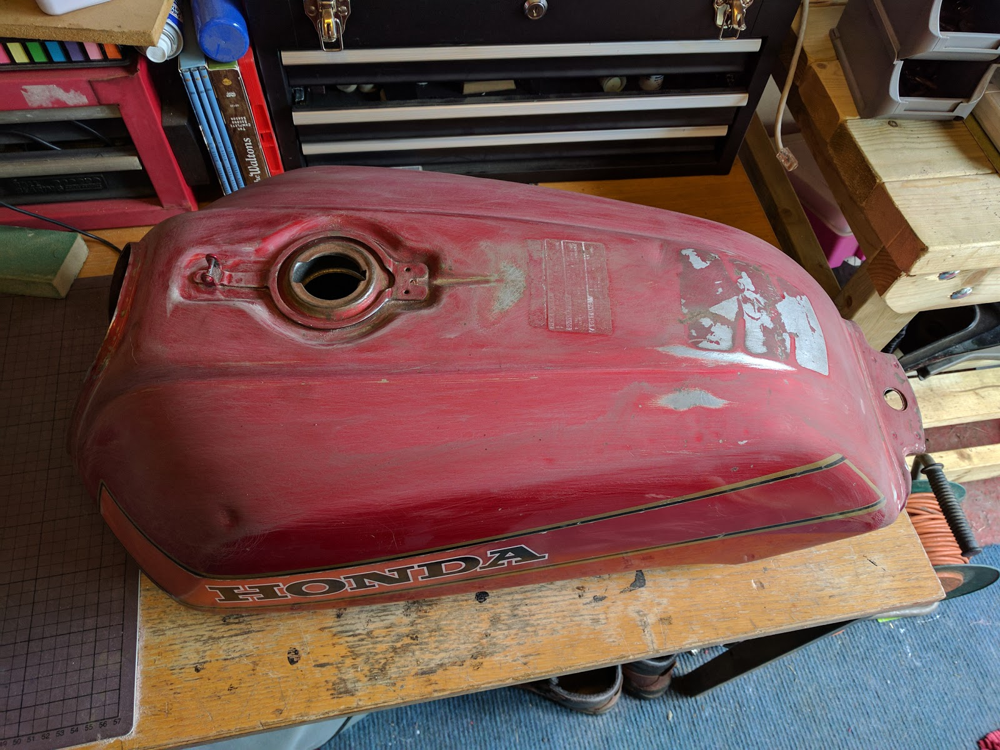
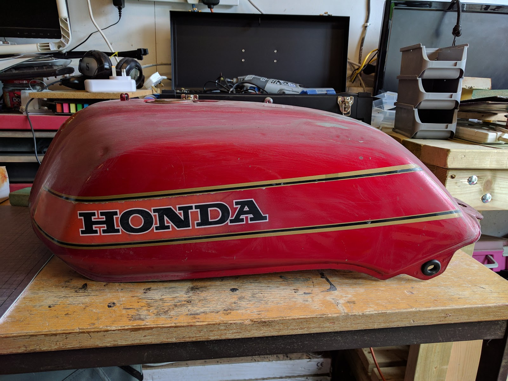

CB750 Fuel tank
While the CB750 was off the road waiting for the circlip for the gear lever, I decided to check over the spark plugs.
This involves removing the tank, so with the tank on the workbench I took out each plug and checked the thread for corrosion. As I the plug in cylinder 2 had almost seized I decided to put a bit of copper ease on each thread when I put them back in.
I know there are opposing views on using copper ease (copper slip) on spark plug threads, but as I wanted to make sure I could get the plugs out again at a later date, I’ve put a bit on.
Now that the tank was on the bench, I started thinking about my rough running problem. after about 10 minutes, I get some ‘lumpy’ running with constant throttle, and I have already changed the HT leads and plugs to see if that fixed it. it didn’t.
so I thought I would drain and clean the tank.
with the tank on the bench I put a lower portable bench next to it. put a petrol can on the lower bench and put a tube between the fuel tap and the petrol can. then turn the tap on and the fuel easily flows into the container.
but you know me by now…. It takes a while to fill a petrol can and I guess my mind wandered, as all of a sudden, I heard a dripping noise. I looked down and realised that the petrol can was now full and overflowing onto the floor (not the best place to store petrol BTW).
I turned off the fuel tap, got a second petrol can, emptied some of the first can into the second, and carried on emptying into the second can. luckily there wasn’t much petrol left, and the second can didn’t even get half full.
So, now it’s drained I can take off the fuel tap and clean the filter. Get out my biggest spanner, and it’s not big enough. I swear I’m not making this up, things just don’t seem to go right for me. Out with the caliper (measuring caliper, not brake caliper) and find it’s 24 mm across the flats. my biggest spanner is (currently) 22 mm. I have sockets, but you can’t get a socket onto a fuel tap. I do have adjustable wrench’s but I really don’t want to scrape the nut surface, so I’ll get the correct spanner before I can take the fuel tap off and clean it.
Whilst the tank is on the bench, I remember that I bought a spare tank years ago, with the idea of spraying it and being able to change the bikes colour just by swapping the tank and side panels.
So I grab the spare tank. okay with my luck it won’t fit, so before I go sanding and spraying it, I’d better check. so I put it onto the CB750 and nearly fall down in shock. it fits. okay, so now I can clean it up and spray it, whilst keeping the bike on the road.
it is just a bare tank, no fuel cap and no fuel tap. having a look at the fitting. the fuel cap from my original tank will fit, but I’d really like to have the spare tank fully equipped, so off looking for fuel caps and fuel taps.
I go onto the wemoto website and look for bits for a 1982 honda cb750. and there is a fuel tap, and just over a tenner. that sounds like a good price, but I thought I’d better check so I had a look on david silver spares and they also had a fuel tap, but for over fifty pounds. the wemoto one it is. so I placed the order for a fuel tap and some new fuel hose.
when they arrive (and I have a spanner that fits), I’ll fit them to the original tank, and clean the old filter and tap and fit it to the spare tank.
So now it’s just a case of sanding the spare tank down and painting it. I’ve made a start but sanding b hand is a slow process when youre trying to get back to bare metal to check for rust.
here is the tank partly sanded:
 
as you can see, I’ve got a long way to go, and some sort of power sanding seems the best way to move forward, so I’ll have a look into what tools I can use that will sand, but not too aggressively.